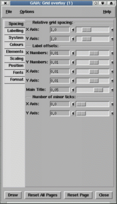

Just press the Draw button at the bottom of the window. Sensible defaults exist for all parameters.
Just select the System tab, now select the System: menu and choose the option pixels.
If your image doesn't show celestial coordinates then it doesn't have a recognised calibration. See the astrometry toolboxes for how to add or define a calibration (assuming this doesn't mean that there's a really problem with an existing one).
To get a hardcopy pull down the File menu in the main window and select the Print... Image... option. This creates a dialog window in which you can either save the displayed image and grid to a postscript file or have it spooled directly to a printer. If the grid graphics extends beyond the edges of the image then you will need to select the Capture Whole Canvas option.
Just select the System tab and the three fields System:, Epoch: and Equinox: will appear. There are 7 different coordinate systems to choose from, just pick the one that you want. If appropriate you'll also be able to set the epoch and equinox of the system.
Press the Spacing tab and the fields headed Relative Grid Spacing: will appear. To decrease the separation between the grid lines move the X Axis: and Y Axis: sliders to the right (increasing value). Now press the Draw button and the spacing between the grid lines should be smaller. If it doesn't change then you may need to increase the spacing factor some more (there is a rounding algorithm that tries to keep the labels nice numbers, which sometimes gets in the way).
This can be done using the Place Numeric Labels Along: section under the Position tab. In the entry fields identified for the X and Y axes you need to enter an HH/DD:MM:SS value that describes the line you want the axis drawn down. So for instance if you wanted to draw the Y axis along the RA 03:19:50 you enter this value and vice versa for the X axis. Note that you select an X axis value to draw the Y axis along and a Y axis value to draw the X axis along. Any values you enter must be visible on the image (and be in the correct celestial coordinate system).
The plot title and the X and Y axis labels can be changed by the controls revealed when you press the Labelling tab. Just type your new title into the Main Title: area and press Draw.
If you want to include any characters not available on your keyboard then you need to know the escape sequence for them. The values you need can be found out using the xfd command (the numbers you require are those display on the right), so for instance if you needed to display a copyright sign you'd enter \251 as part of the string.
It is also possible to display an extended sequence of characters using their unicode values. For instance alpha is \u03B1 and delta \u03B4. Full lists of uncode symbols are at:
http://www.unicode.org/charts
Note you can also get some mathematical and subscripted characters using unicode, for instance \u2070 is a superscripted zero and \u00B1 is a plus/minus sign.
Finally you can also use special "AST" escape sequences to get effects like sub and superscripts. For instance "Hello%s200+\u03B1" would draw Hello with an alpha scaled by 200%. To see the list of available AST escape sequences do:
showme sun211 Escape
In a console window. Note these comments also apply to the X and Y axes labels.
Using the Save options... option in the file menu you can select a file which will have a description of the current options written to it. This file can then be used, at a later time, to restore the options using the Restore options... option. The file produced is a simple text file, but is not really intended for editing by hand.
There are loads of options (far too many to detail here) so just work your way through the tabs and have a play. If you have a very fast machine you might like to select the Options menu and switch on auto-redraw.
Channel map images are created by the KAPPA application CHANMAP, or by the GAIA cube toolbox, which just runs CHANMAP on your behalf. These have many rectangular panels in which the coordinates are repeated. The default settings of this tool do not show this effect well, so an additional set of defaults are available in the Options menu. These do not draw grid-lines, move the axes to the exterior of each panel and draw a border around the whole image.